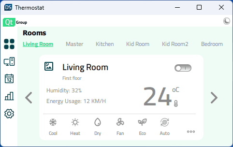
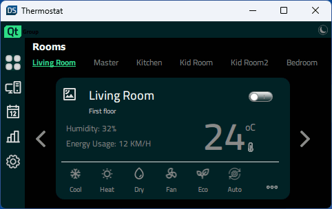
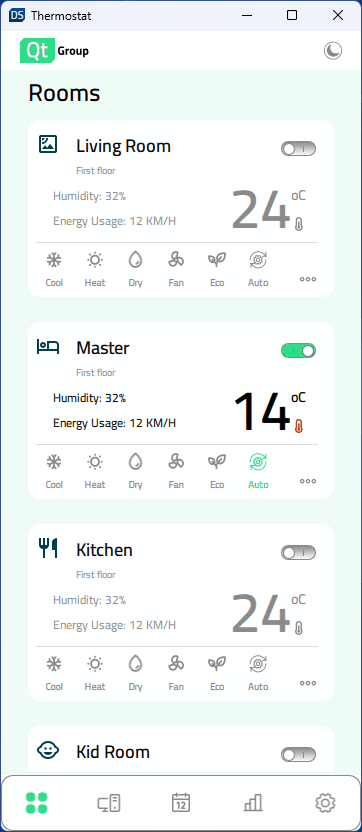
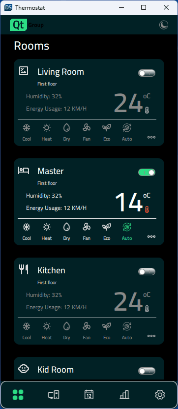
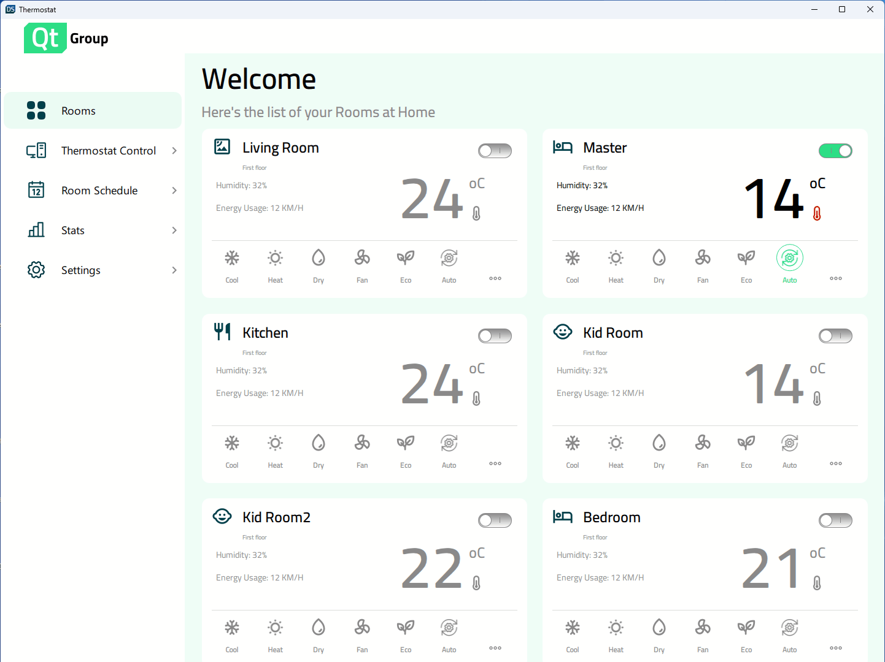
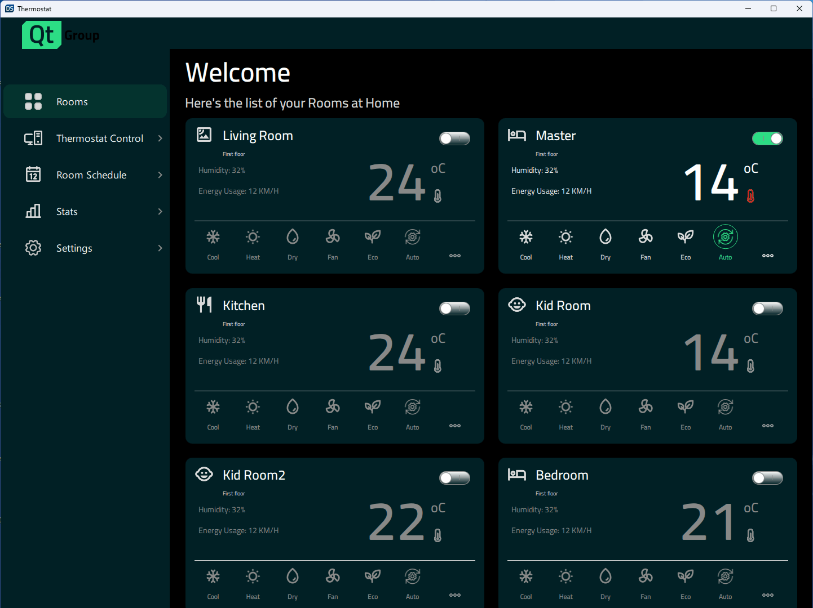

Thermostat
A user interface for a home thermostat, implemented in Qt Quick. It demonstrates how to create responsive applications that scale from large desktop displays to mobile and small embedded displays.
| Light theme | Dark theme |
|---|---|
|  |  |
|  |  |
|  |  |
Thermostat demonstrates a sample thermostat application that is fully responsive. The example can be run and edited in both Qt Design Studio and Qt Creator. It shows how to implement different designs depending on the window size.
Responsive Design
As mentioned above, the application has support for a variety of display sizes.It can scale dynamically when the user changes the window size, or the application will select the correct sizes based on the available display on mobile targets. Properties that specify the display size and control which layout is currently in use have been created in Constants.qml to achieve this behavior.
property bool isBigDesktopLayout: true
property bool isSmallDesktopLayout: false
property bool isMobileLayout: false
property bool isSmallLayout: false
In App.qml, the properties were bound to the window height and width at application startup.
Component.onCompleted: function() {
Constants.isBigDesktopLayout = Qt.binding( function(){
return window.width >= Constants.width && window.width >= window.height
})
Constants.isSmallDesktopLayout = Qt.binding( function(){
return window.width >= 647 && window.width < Constants.width && window.width >= window.height
})
Constants.isMobileLayout = Qt.binding( function(){
return window.width < window.height
})
Constants.isSmallLayout = Qt.binding( function(){
return window.width < 647 && window.width >= window.height
})
}
The states are then used to control the properties of the component such as width, height, fontSize, position, layout (column or row), etc.
states: [
State {
name: "desktopLayout"
when: Constants.isBigDesktopLayout || Constants.isSmallDesktopLayout
PropertyChanges {
target: statistics
leftPadding: 53
rightPadding: 53
topPadding: 23
bottomPadding: 43
}
PropertyChanges {
target: scrollView
isBackgroundVisible: false
delegateWidth: 350
delegateHeight: 182
statisticsChartWidth: 1098
statisticsChartHeight: 647
}
},
State {
name: "mobileLayout"
when: Constants.isMobileLayout
PropertyChanges {
target: statistics
leftPadding: 0
rightPadding: 0
topPadding: 0
bottomPadding: 43
}
PropertyChanges {
target: scrollView
isBackgroundVisible: false
delegateWidth: 327
delegateHeight: 100
statisticsChartWidth: 327
statisticsChartHeight: 383
}
},
State {
name: "smallLayout"
when: Constants.isSmallLayout
PropertyChanges {
target: statistics
leftPadding: 0
rightPadding: 0
topPadding: 0
bottomPadding: 43
}
PropertyChanges {
target: scrollView
isBackgroundVisible: true
delegateWidth: 332
delegateHeight: 80
statisticsChartWidth: 401
statisticsChartHeight: 280
}
}
]